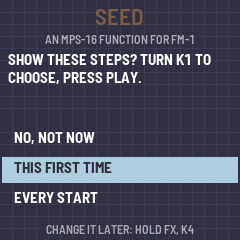
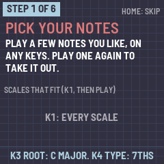
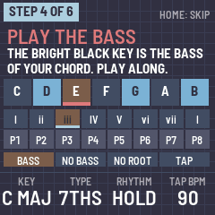

SEED is the chord builder of MPS-16, as firmware for the M-VAVE FM-1. Play a few notes you like, pick a scale that fits them, and the 16 white keys hold that key's chords and progressions. The black keys play the notes of the key and light up the bass of every chord you play. It sends everything out over USB MIDI, so it can drive the synths you already have.
This is an early test build by BeatSmith.
Contents
Install The first start: COACH The keys Home SEQ: your notes, the key, the type LIB Hold a key: SELECT, PRESET, ALGO EDIT, ARP, ENV, LFO and LOCK LOOP, UNDO, SAVE and LOAD SOUND, MIDI and SETUP All the controls 1 InstallFrom Chrome or Edge on a computer, with the FM-1 connected by USB: open the installer and follow it. The installer can put M-VAVE's own firmware back. You can also try SEED in the browser first: it runs the same code, with sound.
2 The first start: COACH
COACH asks first The first time SEED starts, it asks whether to show its steps. Turn K1 to choose NO, NOT NOW , THIS FIRST TIME or EVERY START , then press PLAY . You can change it later in SETUP (hold FX, K4).

Step 1: pick your notes COACH is six short steps. Each one says what to do, and the keys and buttons it means light up or blink. When you do the step, it moves on by itself:
PICK YOUR NOTES : play a few notes you like, on any keys.PICK A SCALE : turn K1 to a scale that fits, press PLAY.PLAY THE PADS : the white keys blink. Play a few.PLAY THE BASS : the bright black key is the bass of the chord you just played.SHAPE IT : tap ARP a few times to change how the chords play.BASS OR NOT : try one of the last four black keys.HOME skips the steps. HOME + FX starts them again any time.

Step 4: the note keys show the chord 3 The keysThe note keys' lights show the chord you played last, so you always know what to play along:
Light Means Bright the bass of the chord Blinking the bass, taken out by NO BASS or NO ROOT: still the note to play under it Mid the rest of the chord Dim the rest of the key
The screen shows the same thing in the Earth Science colours, as MPS-16 ver WEB does: brown the bass, red the root, blue the chord, an outline for a note that was taken out.
BASS, NO BASS, NO ROOT : BASS plays the chords as they are, and the progressions with a bass line. NO BASS drops each chord's bottom note and the bass line. NO ROOT drops the root too, as long as two notes stay. Like every change, it goes to the group you played last (all the chord keys, or all the progression keys); hold a key while you tap it and it goes to that key alone.
TAP : tap it on the beat a few times and the BPM follows. Its light flashes on the beat. MIDI clock coming in sets the BPM too.
4 HomeThe buttons are named for what they do:
Button Does HOME Home. Held: SHIFT EDIT Pad edit: the window, START and END, with the notes and playhead. SHIFT + EDIT: LOCK SEQ What the keys hold: your notes, the scale, the root, the chord type SEL LIB: chords and progressions to put on keys ARP The RHYTHM of the group played last, one step a tap. SHIFT + ARP: UNDO ENV The notes' shape: LENGTH, HUMANIZE, VELOCITY, STRUM LFO The groove: SWING, SPEED, INVERSION FX SOUND. Held: SETUP. SHIFT + FX: COACH SAVE Save. Held: LOAD PLAY, REC The looper GLO STOP ALL OCT- / OCT+ Octave: of the key you hold, else of the group you played last
The knobs at home are free for now. Hold a key with SELECT, PRESET or ALGO anywhere for its group's sound, START and END (section 7).
The one rule
Every change goes to the group you played last : all the chord keys, all the progression keys, or the note keys. Hold a key while you make the change and it goes to that key alone. A group change sets every key in it to the same value. LOCKed keys are left out of group changes.
5 SEQ: your notes, the key, the typePress SEQ . Every key is now a note, like a normal keyboard. Play the notes you like: each one you play is added, and playing it again takes it out. The scales that hold all of them are listed below, best first (the first note you played as the root). Turn K1 to choose one and press PLAY : the keys are rebuilt in that key.
Knob Does K1 The scale: of those that fit your notes, or with no notes, every scale K2 Start again K3 The key's root K4 TYPE: TRIADS, 7THS, 9THS, SUS2, SUS4, ADD9
SEQ again (or HOME) goes back.
6 LIBPress SEL . K1 picks what's listed: TRIADS, 7THS, 9THS, SUS2, SUS4, ADD9 or PROGRESSIONS. Turn K2 to choose one, PLAY to hear it, and a white key puts it on that pad. It follows the key when you change it.
7 Hold a key: SELECT, PRESET, ALGOSELECT, PRESET and ALGO do one thing each, on every screen, and only while you hold a key . The change goes to that key's whole group.
Hold a key and turn Does SELECT The group's output: a sound (WARM, KEYS, ORGAN, STRINGS, PLUCK, BASS, BELL, LEAD, PAD, BRASS), or MIDI 1, 2, 3 or 4. A sound plays on the FM-1 with no MIDI; MIDI is silent on the FM-1 and goes out on that channel PRESET START: the line where the window begins ALGO END: the line where it ends
The lines move smoothly, in tiny steps that grow the faster you turn (hold HOME for the finest). They go anywhere, notes there or not, up to a quarter of the sequence past either edge, and the notes never move: what's outside the lines is dark and doesn't play. The window shows while you turn and closes when you let go, with its length in seconds.
This is not note LENGTH (ENV K1), which is how long each note lasts.
Parked for now, to be placed again: the key's root (set in PICK NOTES meanwhile), INVERSION and SWING.
8 EDIT, ARP, ENV, LFO and LOCKThese shape how the keys play. Each change goes to the group played last, all set to the same value; hold a key while you turn a K knob and it goes to that key alone. The top of EDIT, ENV and LFO shows the notes of the key played last with the playhead, brown the lowest note, white the notes sounding now. Press the same button again for home.
ARP steps the RHYTHM, no screen: HOLD, STABS, OFFBEAT, 3-3-2, SYNC, ARP UP, ARP DOWN, ARP UP-DN, ARP RANDOM.
EDIT is pad edit, the window: turn PRESET for START and ALGO for END here without holding a key (section 7).
ENV , the notes' shape:
Knob Does K1 LENGTH: 1/32, 1/16, 1/8, 1/4, 1/2, AS IS, 1 BAR, 2 BARS, 4 BARS, LEGATO K2 HUMANIZE: each note a little off in time and velocity, like a player K3 VELOCITY: as you play it, or a fixed one K4 STRUM: the chord's notes one after another, OFF to 200 ms
LFO , the groove:
Knob Does K1 SWING: the off-beats late, STRAIGHT to 75% K2 SPEED, 50% to 200% K3 INVERSION, -3 to +3 (chord keys)
The note keys sound while you hold them, so only HUMANIZE (ENV K2) applies to them.
SHIFT + EDIT is LOCK : it locks the key you played last, so it stays exactly as it is when the key, type or bass mode changes, and group changes leave it out. Again unlocks it. A small corner marks a locked key.
9 LOOP, UNDO, SAVE and LOADREC opens the LOOP window and arms it: REC blinks. PLAY gives a bar's intro (the metronome counts it in), then the loop runs and records what goes out as MIDI: chord keys, progression keys with their rhythms, note keys and MIDI in. Every pass that records becomes a layer, so keep playing to stack parts.
Control Does PLAY Armed: the intro, then recording. Playing: stop. Stopped: play the loop (no recording) REC Playing: recording on and off. Stopped: arm. In another screen: back to LOOP SHIFT + ARP The last layer off HOME + REC Clear the loop K1 METRONOME: OFF, INTRO ONLY, ALWAYS (the FM-1's speaker only, never MIDI) K2 BARS: 1, 2, 4, 8 K3 QUANTIZE: OFF or 16THS, on playback, so it can always be switched off again K4 SWING: STRAIGHT to 75%, with QUANTIZE on
The loop plays out on the channels its notes came in on and follows TAP and MIDI clock. It keeps playing when you leave the window; PLAY stops it anywhere. The colours: blue chord keys, light blue progression keys, red note keys, white the keyboard and MIDI in.
GLO is STOP ALL , always dim lit: every key, the loop, all notes off on every channel.
SHIFT + ARP outside the loop window is UNDO : one step back (a LIB drop, clearing the keys, a LOAD). Again goes forward.
SHIFT is HOME held . SHIFT + PLAY clears every key that isn't locked. ARP undoes it.
SAVE keeps the keys, their EDIT settings, the loop and the settings. Hold SAVE to LOAD them back.
10 SOUND, MIDI and SETUPFX opens SOUND, the overview of every group's output: K1 the chord keys, K2 the progression keys, K3 the note keys, K4 the keyboard (PICK NOTES and LIB). Each is either a sound on the FM-1 (no MIDI), or MIDI 1 to 4 (silent on the FM-1). Hold a key and turn SELECT for the same anywhere.
Ten sounds: WARM, KEYS, ORGAN, STRINGS, PLUCK, BASS, BELL, LEAD, PAD, BRASS.
MIDI goes out over USB and Bluetooth (the FM-1's TRS jack is MIDI in only). MIDI coming in on channels 1 to 4 plays that group's sound; above 4, the keyboard's. GLO sends all notes off on every channel.
Hold FX for SETUP: K1 Bluetooth MIDI on or off, K2 MIDI clock out (24 a beat, at the BPM), K3 MIDI clock in (the BPM follows it while it comes), K4 the steps (OFF, FIRST, ALWAYS). HOME + FX for the steps.
11 All the controlsControl Does Chord keys (white 1 to 8) Chords. In LIB, take the pick. In REC, pick the key Progression keys (white 9 to 16) Progressions, one at a time. A tap plays START to END once Note keys (black 1 to 7) The notes of the key, lit by the chord you played C pads (last 4 black keys) BASS, NO BASS, NO ROOT (the group, or the key held), TAP HOME Home. Held: SHIFT. In COACH: skip EDIT Pad edit: the window, PRESET START, ALGO END. HOME + EDIT: LOCK SEL LIB ENV The notes' shape: LENGTH, HUMANIZE, VELOCITY, STRUM LFO The groove: SWING, SPEED, INVERSION FX SOUND: every group's sound or MIDI channel. Held: SETUP. HOME + FX: COACH GLO STOP ALL, always dim lit PLAY The loop: armed, the intro and recording; playing, stop; stopped, play. SHIFT: clear the keys. In SEQ: use the scale. In LIB: hear it ARP RHYTHM, a step a tap. HOME + ARP: UNDO (in LOOP: the last layer off) SEQ Your notes, the scale (K1), the root (K3), the chord type (K4) REC LOOP: open it armed, recording on and off. HOME + REC: clear SAVE Save. Held: LOAD OCT- / OCT+ Octave: of the key you hold, else the group played last. In SEQ: the keyboard